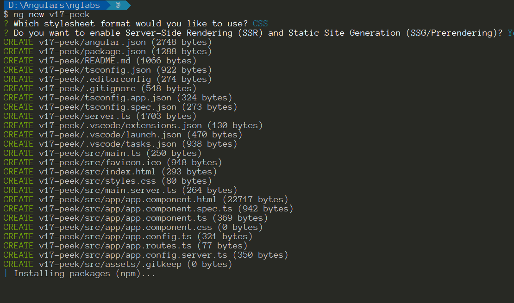

Angular 17 快上線了，已經看到 RC 版釋出，當然要先玩看看，這一版讓人興奮的一定是新的 flow syntax，除此之外還有什麼有趣的東西嗎? 這篇會快速筆記一下
Angular v17 幾個 Highlight 重點
- 新專案預設使用 Standalones API
- 建立新專案時，可以選擇啟動 Server-side Rendering (SSR)
- new flow syntax (RFC 連結)
Standalone by Default
相信第一點應該不用多說什麼，如果有開始寫 standalone component 的朋友，大概都會覺得開發體驗還不錯，少了一些多餘的事情要做，在 Angular 17 建立新專案時就不需要再多加 --standalone 的參數，預設就會使用開啟 standalone 的模式😍

如何從 ngModule 搬到 standalone，可以參考官方提供的搬家手冊
SSR
過往有寫過 Angular SSR 的朋友就知道那個步驟有多麼繁瑣，現在只要在建立專案時，選擇啟用 SSR 功能時，Angular CLI 就會自動幫我們加入 SSR 所需的相關檔案，也可以從 angular.json 內做設定
Angular hydration 在 v17 也是預設啟動， Hydration 相關資訊可以參考這篇文件
Flow Syntax
這新功能應該不用多說了吧，在 preview 階段就已經有不少大神在做嘗試，自己也有玩一下，真的很期待，雖然過往習慣使用 directive 來控制畫面的人，我相信新的寫法會讓 template 更容易閱讀和管理，也很期待 @defer 的威力。
這邊也提供幾篇文章給大家
- Meet Angular’s New Control Flow
- YouTube: I’ve been using the new Angular control flow syntax for templates (it’s good)
- A Comprehensive Guide to Angular’s Defer Block
Final Thought
Angular Team 從 v16 後就陸續提供很多讓人驚豔的新功能，同時也為 Angular 賦予新能量，真心期待接下來的發展，例如 standalone component, zone.js optional 等